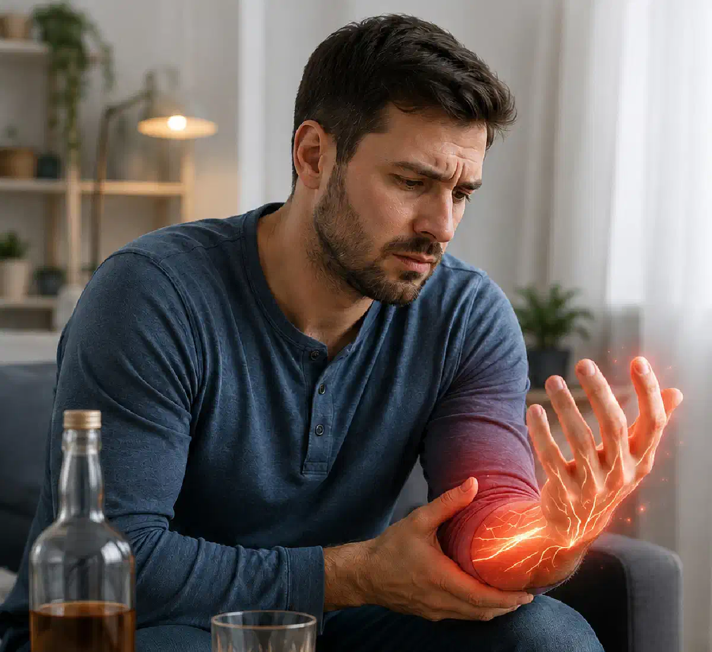

+38(068) 79 72 782
+38(068) 79 72 782Після алкоголю німіють руки й ноги: коли потрібна допомога
Пояснює лікар нарколог


Безкоштовна консультація, працюємо цілодобово 24/7
Пояснює лікар нарколог

Дата написання: 10 лип. 2026 р.
Останнє оновлення: 10 лип. 2026 р.
Оніміння рук і ніг після алкоголю — симптом, який не можна ігнорувати, особливо якщо він з’явився після тривалого запою, сильної інтоксикації, безсонної ночі, тремору, стрибків тиску або вираженої слабкості. Іноді неприємні відчуття минають після відновлення організму, але в низці випадків оніміння може вказувати на порушення роботи нервової системи, судин, дефіцит вітамінів, алкогольну полінейропатію або небезпечні ускладнення після вживання алкоголю.
Після алкоголю людина може відчувати поколювання в пальцях, «мурашки», печіння, зниження чутливості, слабкість у ногах, ватяність кінцівок, оніміння губ, тремтіння, запаморочення і тривогу. Такі симптоми особливо часто виникають після запою, коли організм виснажений, зневоднений, порушені сон, харчування та водно-сольовий баланс. Якщо оніміння виражене, не минає, посилюється або супроводжується порушенням мовлення, слабкістю з одного боку тіла, болем у грудях, сплутаністю свідомості, судомами, галюцинаціями або втратою свідомості, потрібна термінова медична допомога. У таких випадках не можна чекати, поки «саме мине».
Оніміння кінцівок після запою може виникати через поєднання кількох факторів. Тривале вживання алкоголю перевантажує нервову систему, судини, серце, печінку й обмін речовин. На тлі запою людина часто погано харчується, мало спить, втрачає рідину, відчуває тривогу, тремор і стрибки тиску. Усе це може відображатися на чутливості рук і ніг. Найчастіше пацієнти описують оніміння як поколювання в пальцях, слабкість у кистях, ватяність ніг, відчуття холоду, печіння або «мурашок». Іноді німіють тільки пальці рук або стопи, а іноді неприємні відчуття поширюються вище — на гомілки, стегна, передпліччя або губи.
Важливо розуміти, що оніміння після запою — це не самостійна хвороба, а симптом. Причина може бути відносно легкою, наприклад зневоднення або тимчасове порушення обміну речовин, але може бути й серйозною: алкогольна полінейропатія, ушкодження нервів, виражений дефіцит вітаміну B1, гіпертонічний криз, порушення мозкового кровообігу або тяжка абстиненція. Якщо оніміння з’явилося після тривалого вживання алкоголю, супроводжується слабкістю, тремором, тривогою або стрибками тиску, людині може знадобитися медичний вихід із запою.
Оніміння після алкоголю вважається небезпечним симптомом, якщо воно виникло раптово, посилюється, з’являється тільки з одного боку тіла або супроводжується іншими тривожними ознаками. Особливо небезпечно, якщо німіє одна рука або одна нога, з’являється перекіс обличчя, порушується мовлення, погіршується зір, виникає сильний головний біль, сплутаність свідомості або порушення координації. Такі симптоми можуть нагадувати ознаки інсульту, при яких медичну допомогу потрібно викликати негайно.
Також небезпечно, якщо оніміння поєднується з болем у грудях, сильною задишкою, перебоями в роботі серця, різкими стрибками тиску, непритомністю, судомами, галюцинаціями, вираженою агресією або неможливістю нормально розмовляти. Після тривалого вживання алкоголю тяжка абстиненція може супроводжуватися не лише тремором, а й судомами, галюцинаціями та небезпечною нестабільністю вегетативної нервової системи. Якщо людина після алкоголю скаржиться на оніміння, слабкість, сильну тривогу, не може встати, погано орієнтується, не впізнає близьких або поводиться неадекватно, очікування вдома може бути небезпечним. У такій ситуації краще не намагатися лікувати стан самостійно, а звернутися до лікаря. При алкогольній інтоксикації та ознаках абстиненції може знадобитися зняття алкогольної інтоксикації Одеса , але тільки після оцінки стану спеціалістом і виключення небезпечних ускладнень.
Алкогольна інтоксикація впливає не тільки на печінку та шлунок, а й на нервову систему. Після вживання алкоголю може порушуватися передача нервових імпульсів, погіршуватися живлення тканин, посилюватися спазм судин, змінюватися артеріальний тиск і рівень рідини в організмі. На цьому тлі з’являються поколювання, оніміння, тремтіння, слабкість і відчуття «ватяних» кінцівок.
При запої організм працює в режимі перевантаження. Людина часто не харчується повноцінно, втрачає електроліти, погано спить, відчуває тривогу й виснаження. Нервова система стає більш вразливою, тому навіть звичне навантаження може проявлятися незвичними симптомами: онімінням рук, ніг, губ, тремтінням, запамороченням і слабкістю. Якщо порушення чутливості виникло одноразово після сильного вживання алкоголю і швидко минуло, це все одно привід замислитися про стан організму. Якщо ж оніміння повторюється після кожного вживання, з’являється після запоїв або зберігається кілька днів, потрібна консультація лікаря.
Алкогольна полінейропатія — це ураження периферичних нервів, яке може розвиватися при тривалому або регулярному вживанні алкоголю. Вона часто проявляється онімінням, поколюванням, печінням, болем, слабкістю в ногах або руках, порушенням чутливості та проблемами з рівновагою. Симптоми периферичної нейропатії можуть включати оніміння й поколювання у стопах або кистях, пекучий або стріляючий біль, порушення координації та м’язову слабкість.
Перші ознаки алкогольної полінейропатії часто починаються зі стоп і пальців ніг. Людина може помічати, що ноги німіють увечері, стають «чужими», з’являється печіння в підошвах, мурашки, слабкість під час ходьби або невпевненість у рухах. Пізніше симптоми можуть поширюватися вище й зачіпати руки. Алкогольна полінейропатія може бути пов’язана як із токсичною дією алкоголю на нервову тканину, так і з порушенням харчування, дефіцитом вітамінів і загальним виснаженням організму. Наукові огляди описують алкогольну нейропатію як ускладнення, при якому страждають чутливі, рухові та вегетативні нервові функції.
Тремор, слабкість і оніміння губ після запою можуть з’являтися на тлі абстиненції, тривоги, порушення дихального ритму при паніці, стрибків тиску, дефіциту рідини, електролітних порушень і перевантаження нервової системи. Але такий симптом не можна автоматично вважати «звичайним похміллям».
Оніміння губ може поєднуватися з тремтінням рук, прискореним серцебиттям, пітливістю, внутрішнім страхом, безсонням, нудотою і слабкістю. Іноді це пов’язано з вираженою тривогою після алкоголю, але іноді може бути ознакою більш серйозного стану, особливо якщо одночасно з’являється порушення мовлення, перекіс обличчя, слабкість у руці або нозі, сильне запаморочення.
У таких ситуаціях важливо не затягувати зі зверненням до спеціаліста: виведення із запою на дому в Києві допомагає оцінити стан пацієнта, зменшити прояви інтоксикації та визначити, чи можна надавати допомогу вдома, чи потрібна госпіталізація. Якщо німіють губи, обличчя, язик або одна сторона тіла, краще не чекати. Такі симптоми потребують термінової оцінки лікаря, тому що схожі прояви можуть зустрічатися при порушенні мозкового кровообігу та інших невідкладних станах.
Після тривалого вживання алкоголю в людини може виникати дефіцит вітамінів групи B, особливо вітаміну B1. Це пов’язано з поганим харчуванням, порушенням всмоктування поживних речовин, блюванням, виснаженням і токсичним впливом алкоголю на організм. Дефіцит вітаміну B1 часто зустрічається у людей з алкогольним розладом і може призводити до серйозних неврологічних ускладнень.
Вітаміни групи B важливі для нормальної роботи нервової системи. При їх нестачі можуть з’являтися слабкість, дратівливість, порушення сну, оніміння, поколювання, зниження чутливості, проблеми з координацією та погіршення загального самопочуття. Особливо небезпечні ситуації, коли після запою з’являються сплутаність свідомості, порушення ходи, виражена слабкість, проблеми з пам’яттю або зором. NIAAA описує енцефалопатію Верніке як неврологічний невідкладний стан, пов’язаний із дефіцитом тіаміну, який потребує термінового лікування.
Стрибки тиску після алкоголю — часта проблема, особливо після запою або різкої відміни алкоголю. У людини може з’являтися прискорене серцебиття, тривога, пітливість, тремтіння, головний біль, слабкість і оніміння кінцівок. Іноді оніміння пов’язане із судинною реакцією, спазмом, порушенням кровообігу або перевантаженням серцево-судинної системи.
Особливо небезпечно, якщо оніміння з’являється на тлі високого тиску, болю в грудях, задишки, порушення мовлення, сильного головного болю, нудоти, блювання, втрати координації або слабкості в одній половині тіла. У таких випадках не можна списувати симптоми тільки на похмілля. Після запою тиск може бути нестабільним: вранці він один, через годину інший, на тлі тривоги або тремору — ще вищий. Самостійно підбирати таблетки, змішувати препарати або різко знижувати тиск без лікаря небезпечно. Краще викликати спеціаліста, який оцінить стан і вирішить, чи потрібне виведення із запою на дому Одеса , чи необхідна госпіталізація.
Терміново викликати лікаря-нарколога потрібно, якщо після алкоголю німіють руки й ноги, а також є ознаки тяжкої інтоксикації або абстиненції. До таких ознак належать тривалий запій, неможливість зупинитися, сильний тремор, безсоння, виражена тривога, блювання, зневоднення, стрибки тиску, прискорене серцебиття, слабкість і сплутаність свідомості.
Нарколог особливо потрібен, якщо людина п’є кілька днів поспіль, похмеляється, не їсть, погано спить, скаржиться на оніміння кінцівок, тремтіння, біль у серці, страх, панічні стани або не може самостійно вийти із запою. Лікар оцінює стан, вимірює тиск і пульс, уточнює тривалість вживання, наявність хронічних захворювань і підбирає безпечний формат допомоги. Якщо є судоми, галюцинації, втрата свідомості, сильна агресія, підозра на інсульт, гострий біль у грудях або виражене порушення дихання, потрібна екстрена медична допомога, а не звичайне домашнє лікування. Алкогольна абстиненція може перебігати тяжко й включати судоми, галюцинації та делірій.
Лікувати оніміння після алкоголю вдома можна тільки в тих випадках, коли лікар оцінив стан і не бачить ознак небезпечних ускладнень. Самостійно ставити діагноз за одним симптомом не можна. Оніміння може бути пов’язане з інтоксикацією, тривогою, тиском, дефіцитом вітамінів, полінейропатією або невідкладним станом.
Вдома можна організувати безпечні умови: забезпечити спокій, не давати людині продовжувати вживати алкоголь, стежити за свідомістю, диханням, тиском і загальним станом. Але не можна безконтрольно давати сильні препарати, змішувати ліки з алкоголем, намагатися різко «приспати» людину або лікувати тяжкий запій без лікаря. Якщо оніміння повторюється, зберігається після відновлення, посилюється, заважає ходити, супроводжується болем, слабкістю, порушенням мовлення або координації, потрібна медична діагностика. У таких випадках домашній формат може бути тільки першим етапом допомоги, а не повноцінним вирішенням проблеми.
Крапельниця після алкоголю при інтоксикації застосовується для полегшення стану після запою, відновлення рідини, підтримки організму та зменшення проявів абстиненції. Але крапельниця не є універсальним лікуванням оніміння рук і ніг. Якщо причина пов’язана з полінейропатією, судинним порушенням або неврологічним ускладненням, однієї інфузії може бути недостатньо.
Перед крапельницею лікар має оцінити стан пацієнта: тривалість запою, тиск, пульс, рівень свідомості, наявність блювання, судом, болю в грудях, хронічних захворювань і неврологічних симптомів. Це важливо, тому що не кожному пацієнту можна безпечно допомагати вдома. Крапельниця від алкоголю на дому Одеса може бути частиною детоксикації після алкоголю, але після стабілізації людині часто потрібна подальша консультація: перевірка нервової системи, корекція дефіцитів, лікування алкогольної залежності та профілактика повторних запоїв.
Допомога нарколога при онімінні після запою починається з огляду й оцінки ризиків. Лікар уточнює, скільки днів тривав запій, коли був останній прийом алкоголю, чи є тремор, тривога, безсоння, блювання, біль у грудях, стрибки тиску, судоми, галюцинації або порушення свідомості.
Якщо стан дозволяє, нарколог може надати допомогу вдома: провести детоксикацію, полегшити абстинентний синдром, дати рекомендації щодо відновлення та пояснити, коли потрібна додаткова діагностика. Якщо симптоми вказують на небезпечний стан, лікар рекомендує госпіталізацію або екстрену допомогу. Важливо розуміти: нарколог допомагає не тільки прокапатися від запою Харків , а й оцінити, чому після алкоголю з’являються небезпечні симптоми. Якщо людина регулярно йде в запої й після кожного разу стикається з онімінням, слабкістю, тривогою та тиском, потрібно лікувати не тільки інтоксикацію, а й алкогольну залежність.
Детоксикація після алкоголю спрямована на стабілізацію стану після інтоксикації та абстиненції. Її мета — допомогти організму відновитися після запою, зменшити зневоднення, слабкість, нудоту, тремор, тривогу, безсоння та перевантаження внутрішніх органів.
Після детоксикації важливо продовжити відновлення: налагодити сон, харчування, питний режим, контролювати тиск, уникати повторного вживання алкоголю та пройти консультацію лікаря. Якщо є оніміння рук і ніг, може знадобитися додаткова оцінка невролога, аналізи, перевірка вітамінів, цукру крові, функції печінки та стану судин. Крапельниця від алкоголю Одеса допомагає пережити гострий період, але не усуває сформовану залежність. Якщо запої повторюються, після стабілізації варто обговорити з лікарем лікування алкоголізму, психотерапію, кодування або стаціонарну програму.
Госпіталізація після алкогольної інтоксикації потрібна, якщо стан пацієнта тяжкий або нестабільний. Домашня допомога не підходить при втраті свідомості, судомах, галюцинаціях, вираженій сплутаності, тяжкій агресії, сильному блюванні, зневодненні, болю в грудях, порушенні дихання, підозрі на інсульт або різких стрибках тиску.
Також стаціонар може бути потрібен при тривалому запої, літньому віці, серйозних захворюваннях серця, печінки, нирок, цукровому діабеті, перенесених судомах або попередніх тяжких абстинентних станах. У таких випадках пацієнту потрібне спостереження, контроль життєво важливих показників і ширший обсяг медичної допомоги. Якщо після алкоголю німіють руки й ноги, людина не може нормально ходити, падає, плутається в словах, не орієнтується або скаржиться на сильну слабкість, безпечніше розглядати виведення із запою стаціонар. Головне завдання — не просто зняти похмілля, а не пропустити небезпечне ускладнення.
Профілактика ускладнень після запою починається з відмови від самостійного лікування тяжких станів. Якщо людина пила кілька днів, не спала, погано їла, відчуває тремор, тривогу, стрибки тиску й оніміння кінцівок, краще звернутися до нарколога та пройти безпечну детоксикацію під контролем лікаря. Щоб знизити ризик повторного оніміння, важливо відновити харчування, сон, водно-сольовий баланс, перевірити тиск і не повертатися до алкоголю. При повторюваних симптомах потрібна консультація спеціаліста, тому що оніміння після алкоголю може бути раннім сигналом ураження нервової системи.
Головна профілактика — лікування алкогольної залежності. Якщо запої повторюються, організм щоразу отримує нове навантаження, а ризик ускладнень зростає. Своєчасна допомога нарколога, детоксикація, мотиваційна бесіда, лікування алкоголізму, кодування або стаціонарна програма допомагають не тільки вийти з поточного стану, а й знизити ймовірність нових запоїв.

Статтю перевірено експертом
Могучев Станіслав
Лікар-терапевт, ординатор
Можливо цікава стаття:
Цироз печінки: причини, симптоми, стадії та лікування

Так, ми суворо дотримуємося повної конфіденційності на всіх етапах лікування. Інформація про пацієнта, діагноз та проходження терапії не передається третім особам. Звернення до нас не тягне за собою постановку на облік. Ви можете бути впевнені у безпеці та анонімності.
Програма лікування розробляється індивідуально після консультації з фахівцем. Враховуються вид залежності, її тривалість, фізичний та психологічний стан пацієнта. Такий підхід дозволяє підвищити ефективність терапії та знизити ризик зриву. Ми не використовуємо шаблонні рішення.
Так, ми супроводжуємо пацієнтів і після основного курсу лікування. Проводяться консультації, рекомендації щодо адаптації та профілактики рецидивів. За потреби можлива подальша психологічна підтримка. Це допомагає зберегти результат та повернутися до повноцінного життя.
Номер телефону:
+380 (68) 797 27 82
+380 (50) 021 69 57
Адресу наркологічного центра вашого міста уточнюйте за
телефоном
Працюємо: Київ, Одеса, Львів, Харків, Дніпро, Запоріжжя,
Черкасах, Чугуєві, Чорноморську, Кам'янському
Telegram: t.me/umbrellaplus
Графік работы: Цілодобово